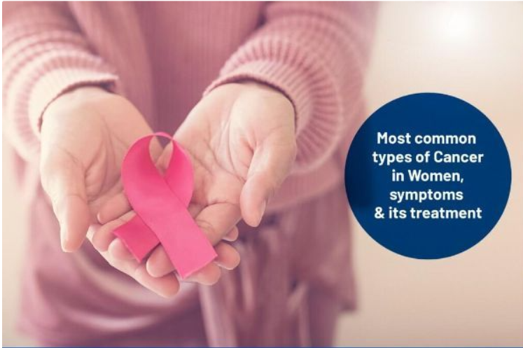

Lump or Thickening
A new lump or thickened area in the breast, chest or underarm.
Knowing which changes to notice can help you seek appropriate medical assessment.

Breast cancer symptoms vary, and some people have no noticeable symptoms. Many breast changes are caused by conditions other than cancer, but new or unusual changes deserve medical attention.

These signs do not necessarily mean cancer. A clinician can help determine whether further evaluation is needed.
A new lump or thickened area in the breast, chest or underarm.
An unexplained change in breast size, shape or contour.
Skin that appears pulled inward, puckered or dimpled.
Persistent redness, swelling or other unusual skin changes.
A nipple that has recently turned inward or changed appearance.
Unexpected discharge, especially bloody discharge or discharge without squeezing.
Unexplained pain in one area of the breast that does not settle.
A new lump or swelling in the underarm or near the collarbone.
Becoming familiar with how your breasts usually look and feel may help you notice new changes.
Breast self-awareness is not a substitute for recommended screening or medical assessment. Routine structured self-examination has not been shown to reduce breast cancer deaths.
Arrange an appointment for a new breast or underarm lump, persistent skin changes, unusual nipple discharge or an unexplained change in appearance. Do not wait for a routine screening appointment if you have symptoms.
Book an Appointment →Depending on symptoms, age and history, a clinician may recommend an examination, ultrasound, diagnostic mammography or biopsy. Not everyone needs every test.
Explore diagnosis →